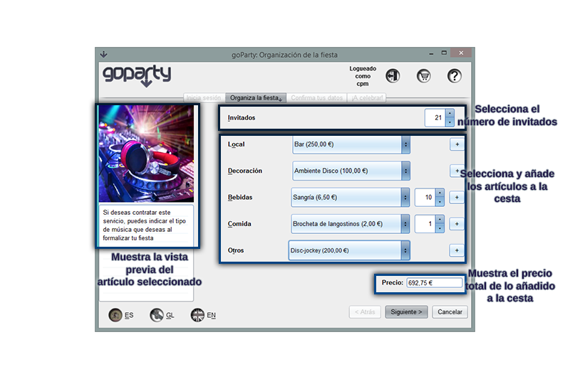

La pestaña de selección de artículos te permite elegir como quieres que sea tu fiesta y se accede a ella una vez has iniciado sesión, sea como usuario o como invitado, desde inicio de sesión. En esta pestaña puedes elegir entre los diversos tipos de artículos y configurar la fiesta que deseas, así como ver el precio acumulado de lo que has seleccionado.
Para seleccionar el número de invitados solo debes indicar la cantidad en el spinner señalado arriba sea escribiendo la cantidad manualmente o haciendo uso de las flechas. El número mínimo de invitados es 1 y el número máximo son 150.
Para la selección de objetos tienes a tu disposición una serie de selectores desplegables en los que puedes elegir el artículo que quieres consultar y este se te mostrará con una imagen y una descripción del mismo. El propio desplegable contiene el precio del artículo. Una vez hayas decidido que lo quieres para tu fiesta puedes añadirlo con su respectivo botón +, situado a su derecha. Si puedes elegir más de una unidad del artículo también podrás incluír varias unidades de una vez indicando la cantidad en su spinner correspondiente.
Si deseas eliminar alguno de los artículos añadidos puedes hacerlo desde la cesta a la que puedes acceder desde el botón mostrado a continuación y que está situado en la parte superior de la pantalla.
Cuando estés conforme con el número de invitados y con los artículos seleccionados para tu fiesta podrás pasar al siguiente paso donde introducirás tus datos y la fecha y hora a la que deseas organizar la fiesta. Debe ser añadido algún artículo a la cesta antes de poder continuar con el proceso.